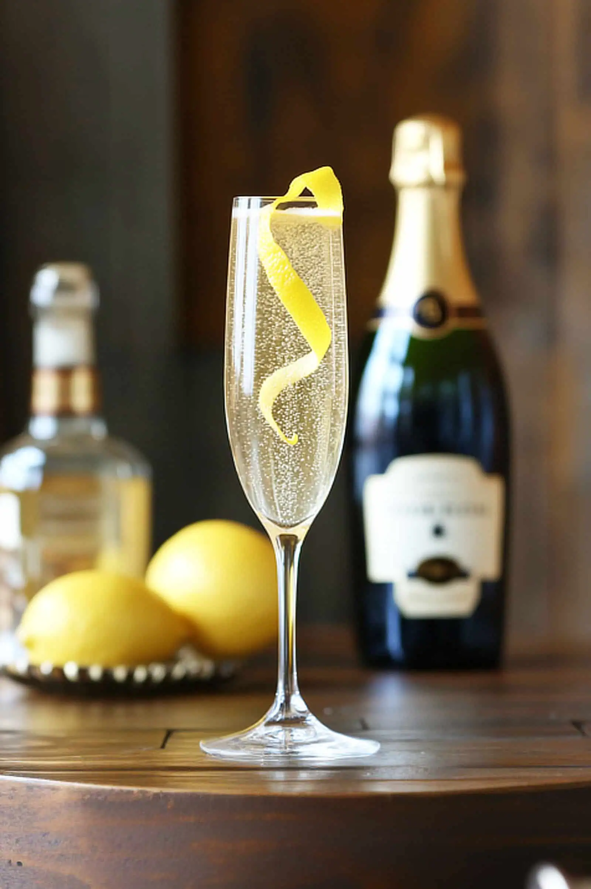
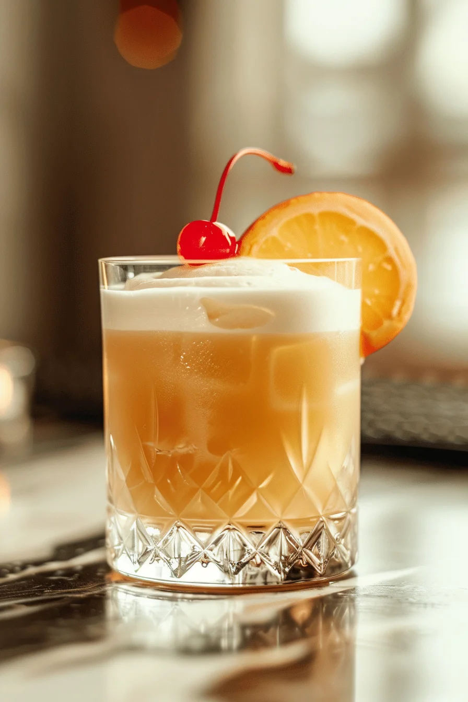
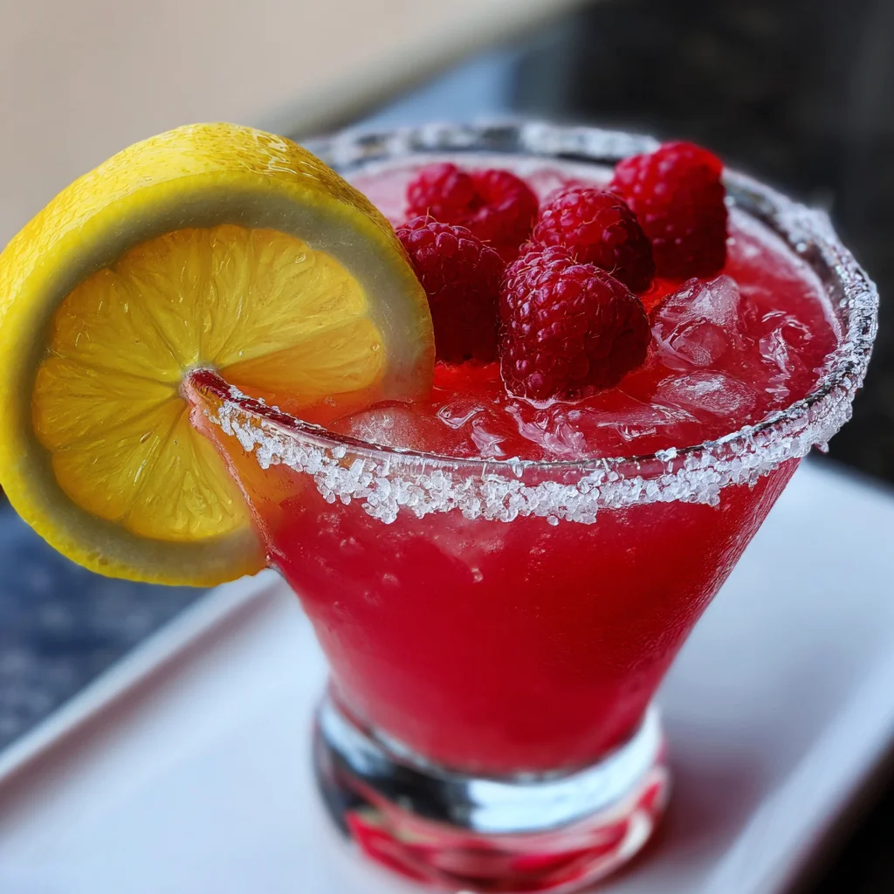
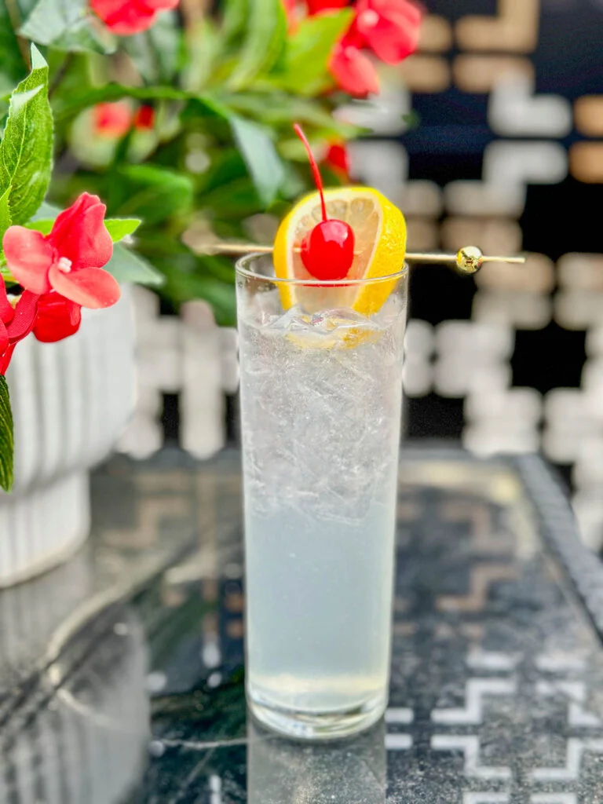
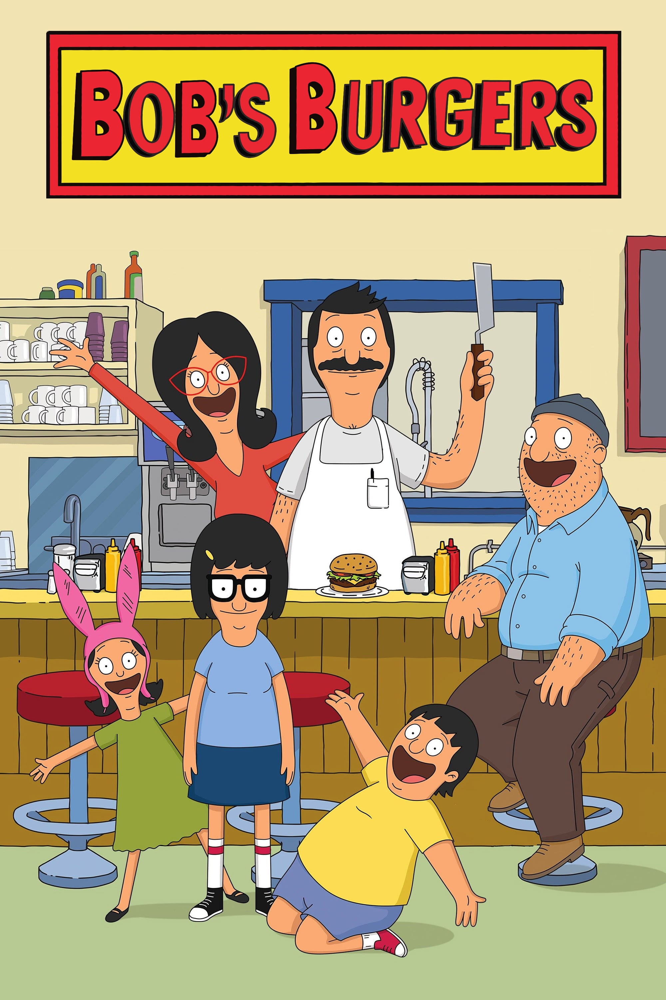

Positions (Deluxe) by Ariana Grande
Tina Snow by Megan Thee Stallion
Kaleidoscope Dreams by Miguel
Good Girl Gone Bad: Reloaded by Rihanna
Birds In The Trap Sing McKnight by Travis Scott
-Ugh, those feels again by Snoh Aalegra
Kiss Land by The Weeknd
Heaven Or Hell by Don Toliver
Born Sinner (Deluxe Version) by J. Cole
good kid, m.A.A.d city (deluxe) by Kendrick Lamar
GO:OD AM by Mac Miller
Help by Blackbear
Make America Psycho Again by Fall Out Boy
An Evening With Silk Sonic by Bruno Mars ~ Anderson.Paak ~ Silk Sonic





Basically, all of the two-part episodes, and there are
three two-part episodes(S4E21 - Wharf Horse (or How Bob Saves/Destroys the Town, Part 1), S4E22 - World Wharf II: The Wharfening (or How Bob Saves/Destroys the Town, Part 2), S8E6 - Bleakening, Part 1, S8E7 - Bleakening, Part 2, S12E21 - Some Like It Bot Part 1: Eighth Grade Runner, and S12E22 - Some Like It Bot Part 2: Judge-bot Day). Though I feel this way for different reasons depending on the episodes, I am unsure what repellent the creators put in those specifically.
S10E1 - The Ring (But not scary)
This episode has a decent plot. However, I cannot stand the predicament that the Belcher kids put their father in. I also despise the ending. Though it makes for fun easter eggs in the future episodes, I felt it was unfair. Though kind of realistic.
S11E2 - Worms of In-Rear-Ment
This episode is awful all around. There are funny moments. But, with Linda's pushiness and Gene's negligent behavior that got his whole family to contract pinworms, I refuse to watch it. This episode is off-putting. I definitely watched it to ensure I can say I've seen it once, but this is definitely a one-and-done type of episode.
S15E8 - They Slug Horses, Don't They?
This episode is actually good. It's realistic to those with siblings, especially sisters, and has a good ending. Tina and Louise have a rising conflict that's probably the most we've seen them bump heads. I relate so much to this episode, being the oldest and only sister to my sister. This episode never fails to make me cry. For my own emotional state, I avoid this beautifully written episode.
| Salty | Sweet | Savory | Sour | Spicy |
| Popcorn | Brownies | Lox Bagels | Pickles | Hot Fries |
| Salted Pistachios | Ice Cream | Chips and Queso | Airhead Xtreme Belts | Hot Cheetos Lime |
| Lay's Original Baked Chips | Churros | Pretzel Bites with Nacho Cheese | Warheads | Takis |
Go to my 'Games I Love' list
Go to my 'Albums I Love' list
Go to my 'Favorite Cocktails' list
Go to my 'Bob's Burgers Episode Skips' list
Go to my 'Best Snacks' table
Go to my 'Wash Day' list
Go to my 'Best Christmas Movies' list